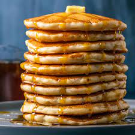

Pancake Recipe

Pancakes are a simple yet tasty breakfast to eat!
Pancakes are a breakfast food you have to cook on the stovetop or grittle, they are relatively simple to cook and have a very tasty outcome! You can even add toppings like chocolate chips, strawberries and condiments like butter, and more!
Now get mentally prepared, you are about to cook this great tasting meal yourself, so be ready for some greatness! Will you add butter, syrup, maybe chocolate chips? Only time will tell!
Ingredients:
- 1 1/2 cups of all-purpose flour
- 3 1/2 teaspoons baking powder
- 1/4 teaspoon salt, or more to taste
- 1 tablespoon white sugar
- 1 1/4 cups milk
- 1 egg
- 3 tablespoons of butter, melted
Directions:
- Get your ingredients ready (Flour, Baking Powder, Salt, White Sugar, Milk, Eggs, and Melted Butter)
- Get a large bowl, and put the flour, baking soda, salt, and sugar into it and stir
- Make a well in the middle and pour in milk, eggs, and melted butter, mix until smooth
- Get a griddle or pan, put it on medium heat, pour batter on it, brown on both sides
- Then server hot, and enjoy your tasty pancakes!